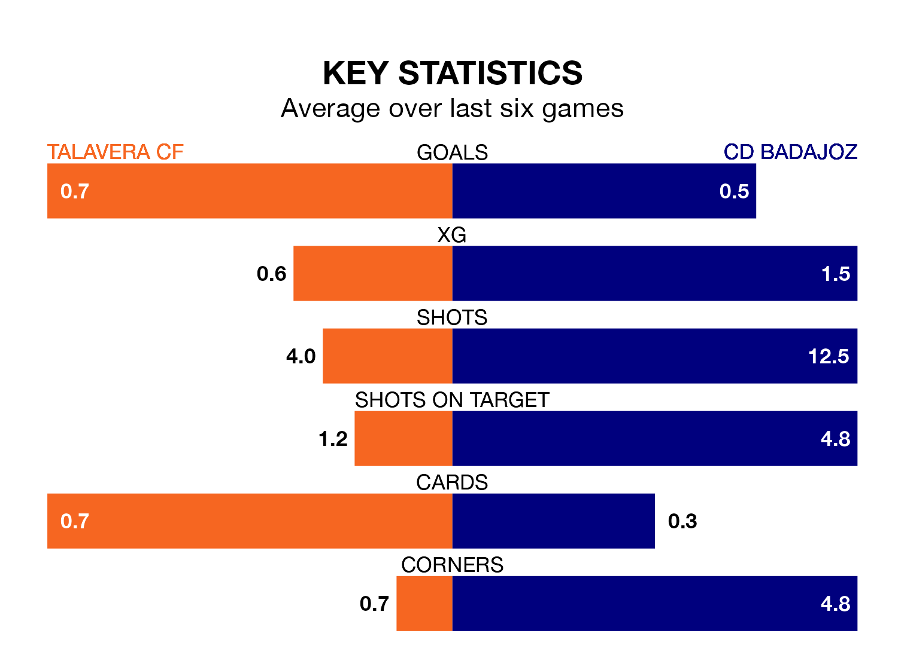

CD Badajoz travel to Talavera CF on Sunday in the Segunda División RFEF Group 5.
The visitors come into the game on the back of a draw in their last match, having tied with CDA Navalcarnero 0-0 at home.
Talavera, meanwhile, won their last match, 3-0 against Ursaria, with their goals scored by Ignacio de Loyola Abeledo Rute and Unai Rementeria Castro.
In the last 10 years, Talavera and Badajoz have played each other on 11 occasions. Talavera won two of them, Badajoz six, and they drew three times.
On average, Talavera scored 0.9 goals and Badajoz 1.5 in those matches.
Their last meeting was on October 28, when Badajoz won 3-2 at home.
Badajoz are 15th in the table after 25 games, of which they have won five and drawn 10, earning 25 points.
Talavera are eight places ahead of the away team in seventh, with 10 wins and eight draws putting them on 38 points.
With 21 goals in 25 games so far this season, Badajoz are scoring at below the league average rate with 0.8 goals per game. And they are conceding at an average rate, letting in 27 goals at a rate of 1.1 per game.
The hosts are also below average scorers, with 1.0 goal per game, compared to a league average of 1.1. They have conceded 0.6 goals per game.
Talavera are in disappointing form in the Segunda División RFEF Group 5, with one win and two draws from their last six games.
With a win and three draws over that period, Badajoz's form is slightly better – they have taken six points from 18, compared to Talavera's five.
Updated: 09:34 (UTC), 08/03/24